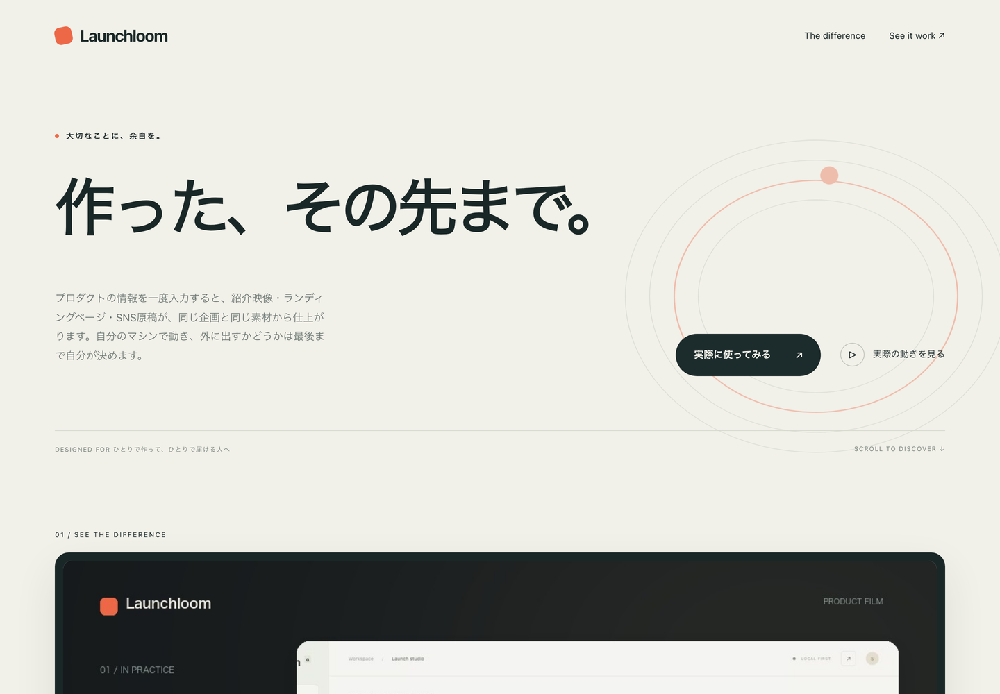
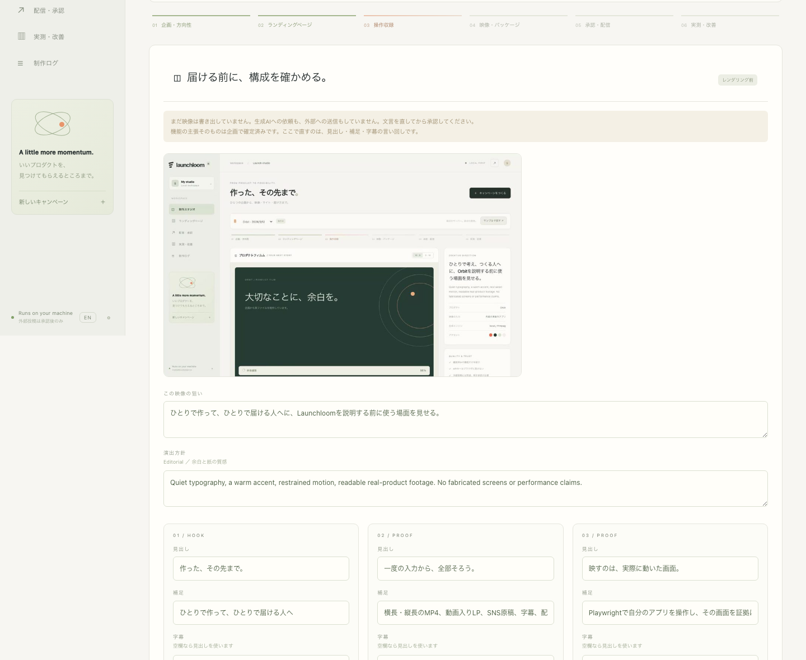

実物を映した紹介映像
1280×720、H.264。自分のプロダクトを実際に操作した収録から組み立てます。作り物の画面でも、ストック映像でもありません。
オープンソースの制作スタジオ
プロダクトの情報を一度入力すると、紹介映像・縦長の切り出し・ランディングページ・SNSの投稿原稿が、同じ企画と同じ素材から仕上がります。自分のマシンで動きます。
Apache-2.0 ・ Python 3.11+ ・ アカウント不要、APIキー不要、外に何も出ません
この映像は、Launchloomがスタジオ自身の画面収録から制作したものです。クローンして動かすと同じ工程が走ります。
カメラ
多くのツールはクリックのたびに寄って戻ります。それは落ち着きのなさとして映ります。 Launchloomは操作ごとの注視点をショットとして保持し、次の対象が新しいショットに値するだけ離れたときにだけ動きます。C2連続の曲線で補間するので、切り替わりで跳ねません。
一度の入力から
制作画面のモックではありません。実際のMP4、実際のHTML、実際の原稿と、全ファイルのSHA-256が入ったマニフェストが出力されます。
1280×720、H.264。自分のプロダクトを実際に操作した収録から組み立てます。作り物の画面でも、ストック映像でもありません。
720×1280を独立したレイアウトで構成します。横長を中央で切り抜いて祈るのではありません。
映像を埋め込んだ自己完結のHTML・CSS・JS。CDN依存もビルド工程もフレームワークもありません。どこにでも置けます。
X、LinkedIn、Threads、Bluesky、YouTube、Instagram、TikTok向けに、 UTM付きリンクと文字数検査つきで。
画面上の見出しをSRTで（音声の書き起こしではありません）。横長・縦長それぞれの静止画も。
すべてをまとめたZIP、素材の出どころを記録したマニフェスト、そして意図的に除外された非公開の根拠メモ。
音声つき
同じ企画、同じ工程に、ナレーションと音楽を重ねたもの。横長と縦長を同じ書き出しで作ります。音を出して再生してください。
音楽は制作者が用意した素材です。生成された音声は使っていません。 Launchloomがナレーションの下に敷き、全体を一度だけラウドネス正規化し、映像の長さに切ります。
説明ではなく
下のページは、映像と同じ企画から生成されたものです。映像を埋め込んだ自己完結のHTMLで、 CDN依存もビルド工程もありません。横のファイルは、ダウンロードできるキットからそのまま写しています。

作った、その先まで。 Launchloomで、一度の入力から、全部そろう。 まずは操作動画をご覧ください。 https://github.com/FORIFOR/Launchloom?utm_source=x &utm_medium=social&utm_campaign=…
2 00:00:03,000 --> 00:00:10,333 一度の入力から、全部そろう。
"capture": "upload", "concept": "local", "copy": "local-template", "raw_recording_in_export": false
インストール不要
このページの上にある映像を出した、そのキットです。「こういうものが出ます」という見本ではありません。開いて中身を読んでください。
機能の根拠として書いた非公開メモと、生の画面収録は、意図的に入っていません。
manifest.json にそう明記され、書き出し時に検査もされます。
自分で自分を撮る
スタジオが一通り動くところを収録し、その収録をLaunchloomに取り込んで、自分の紹介映像を作らせました。その過程で、本物のバグが2つ出ました。自分の道具を自分で使う意味は、そこにあります。
日本語の行頭に「、」「。」が来ていた。日本語で書き出した映像すべてが、この道具は自分が書いている言語を知らない、と告げていました。いまは禁則処理を適用し、
MP4 を MP と 4 に割ることもなくなりました。
縦長が、見せるはずのUIを潰していた。16:10のデスクトップ収録を正方形に近い枠へ押し込んでいたため、証拠にするはずの画面が読めませんでした。いまは収録自身の比率を保ち、ほぼ全幅で見せます。
見出し、証拠の枠、キャプションを9:16用に別々に配置します。同じ構成から同じ書き出しで作るので、言っていることは常に一致します。
書き出す前に
収録が終わったところで制作が止まります。この時点で、映像は書き出されておらず、生成AIにも何も送っていません。実際に収録された画面の1コマと、すべての文言を見て、直してから承認します。

シーンの役割と、どの承認済み機能を指しているかは構造として固定です。言い回しを直しても、別の主張に付け替わることはありません。変更は operator-edited として記録されます。
完成したキャンペーンは、手元の素材のまま作り直せます。CTAの言い回しを変えて 15秒ほどで再出力。再収録も、生成AIへの再依頼も発生しません。
正直な部分
多くの制作ツールは、すごく見えるものを喜んで作ります。これは、誰も確かめていないことを主張しないために作られています。
映像に出る主張はすべて企画から来ます。それぞれに、あなたが書いた根拠メモが付いています。生成映像はラベル付きのコンセプト部分だけで、機能が存在する証拠には決してなりません。
実投稿は既定で無効です。キャンペーンを公開可能にするのは完成とは別の判断で、投稿ごとに、原稿・メディアハッシュ・アカウント・日時に結び付いた承認が必要です。
Postizから実際の状態を読み戻します。送信がタイムアウトしたらそう言い、盲目的に再送はしません。何が実在するかを見せて、判断はあなたに委ねます。タイムアウトは、どちらの証拠にもならないからです。
大量返信も、DMも、買った反応も、アカウント量産もありません。実装していませんし、する予定もなく、追加するプルリクエストはお断りします。
取得できない指標は取得できないままです。イベント数は人数ではありませんし、判断に足りる実測がないときは、ないと表示します。
3分
アカウントもAPIキーも登録も不要です。サンプルは、リポジトリに同梱された小さなタスクアプリを実際に操作・収録して、キット一式を返します。
必要なのは Python 3.11以降、FFmpeg、Chromium。 macOSとDockerは実機で確認済みです。何をどこまで検証したかは検証記録に分けて書いてあります。
git clone https://github.com/FORIFOR/Launchloom.git
cd Launchloom
python3 -m venv .venv && source .venv/bin/activate
python -m pip install -e .
python -m playwright install chromium
# FFmpeg・ブラウザ・フォントを先に確かめる
python -m launchloom doctor
python -m launchloom serve
お願いしたいこと
それと、2つのアーキテクチャのLinuxコンテナと CIランナー。それで全部です。Windowsでは一度も起動していません。実際のSNSアカウントでの投稿も、まだ一度もありません。どちらも私の手元では埋められません。自分の環境で動かした報告が一つ届くほうが、私がもう一週間書き続けるより価値があります。
selftest が一時ディレクトリの中で本物のキットを作り、出力を検査します。アカウントもAPIキーもネットワークも不要で、他の場所には一切触れません。launchloom-selftest.txt が書き出されます。それを貼るだけで報告は完了で、ご自身で状況を説明する必要はありません。何も入れたくない、Dockerもない場合はCodespaceで開く。環境が自動で用意され、実行するコマンドが表示されます。
# すでにクローン済みなら python -m launchloom selftest # 何もインストールしたくない場合 — # イメージは amd64 と arm64 の両方に対応 docker run --rm -e CHROMIUM_NO_SANDBOX=1 \ ghcr.io/forifor/launchloom \ python -m launchloom selftest